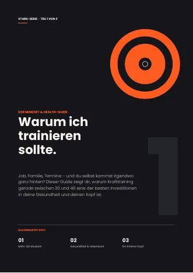
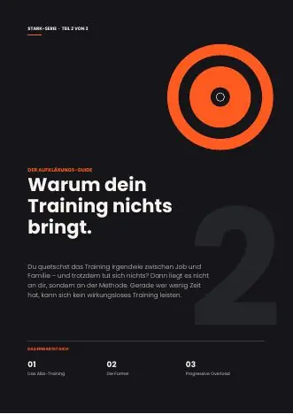
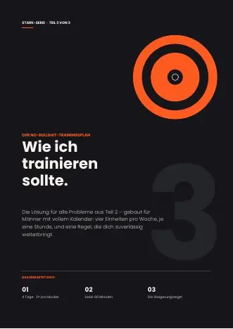
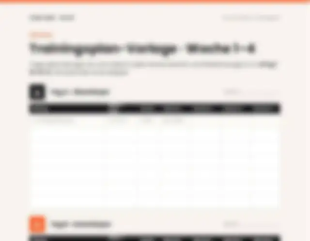

1Warum ich trainieren sollte
Der Mindset- & Health-Guide · PDF, 5 Seiten
- Warum schon 30–60 Minuten pro Woche mit einem geringeren Krankheitsrisiko zusammenhängen
- Was Krafttraining nachweislich mit Stimmung und Anspannung macht
Krafttraining für Männer zwischen Job, Familie und vollem Kalender. Vier Stunden pro Woche, ein klares System – und endlich Ergebnisse, die du siehst und spürst.
Oder starte selbst mit drei Gratis-Guides inklusive Trainingsplan.
Die meisten Männer, die zu uns kommen, stecken an einer dieser drei Stellen fest. Alle drei lassen sich lösen.
„Ich schaffe es nicht mal ins Studio.“
Nach der Arbeit ist die Energie weg, am Wochenende ist die Familie dran. Das Training rutscht jede Woche wieder nach hinten.
„Ich trainiere, aber es passiert nichts.“
Immer dieselben Geräte, immer dasselbe Gewicht. Seit Monaten sieht und fühlt sich nichts anders an.
„Ich weiß nicht, wie es richtig geht.“
Zu viele Meinungen, zu viele Videos. Was davon für dich gilt, bleibt unklar – also lässt du es lieber.
Erst verstehen, warum. Dann erkennen, was bisher schiefläuft. Dann mit einem Plan loslegen, der in deine Woche passt.

1Der Mindset- & Health-Guide · PDF, 5 Seiten

2Der Aufklärungs-Guide · PDF, 5 Seiten

3Der No-Bullshit-Trainingsplan · PDF, 6 Seiten

Die meisten scheitern nicht am fehlenden Wissen, sondern am Dranbleiben. Deshalb ist persönliche Begleitung unser Kernangebot – in zwei Stufen. Wer lieber allein loslegt, bekommt den KI-Plan.
Für dich, wenn du dich selbst antreibst und nur den passenden Plan brauchst.
Für dich, wenn du einen Plan willst, der mitwächst – und jemanden, der regelmäßig nachhakt.
Für dich, wenn du es alleine nicht ins Studio schaffst und echte Begleitung willst – bis es läuft.
Der KI-Plan kostet einmalig so viel wie ein Monat Basis-Coaching. Für dasselbe Geld bekommst du dort einen Monat lang Begleitung statt nur eine PDF-Datei.
Du brauchst keine komplizierte Diät. Drei Dinge entscheiden fast alles – der Rest ist Komfort, damit dein Tag planbar bleibt.
Eiweiß liefert das Baumaterial für neue Muskulatur. Als Richtwert gelten rund 1,6 Gramm pro Kilogramm Körpergewicht pro Tag – bei 85 kg also etwa 135 g. Mehr bringt laut Auswertung von 49 Studien keinen zusätzlichen Muskelaufbau.
Morton et al., Br J Sports Med 2018Dein Körper kann den Aufbaureiz besser nutzen, wenn du das Eiweiß auf mindestens vier Mahlzeiten verteilst – etwa alle drei bis vier Stunden eine Portion. Eine große Portion am Abend ersetzt das nicht.
Schoenfeld & Aragon, J Int Soc Sports Nutr 2018Kohlenhydrate füllen die Glykogenspeicher deiner Muskeln. Aus ihnen zieht dein Körper im Training die Energie für die harten letzten Wiederholungen. Fette brauchst du täglich für Hormone und die Aufnahme der Vitamine A, D, E und K.
Kerksick et al., ISSN Position Stand 2017Karte antippen oder mit der Maus darüberfahren – dann siehst du, warum das so sinnvoll ist.
Ehrlich eingeordnet: Die Reihenfolge im Tag ist die Kür. Pflicht sind die Tagesmenge an Eiweiß, genug Energie insgesamt und Regelmäßigkeit. Wer das erfüllt, macht mit dieser Einteilung nichts falsch – sie macht den Tag nur einfacher planbar. Der KI-Plan passt sie an deine Arbeitszeiten, deine Trainingszeit und deine Vorlieben an.
Für die meisten Männer ja. Entscheidend ist nicht die Zeit im Studio, sondern ob du genug fordernde Sätze machst, jede Muskelgruppe zweimal pro Woche trainierst und das Gewicht regelmäßig steigerst. Genau das erklärt Guide 2.
Den KI-Plan bezahlst du einmal und setzt ihn selbstständig um. Im Basis-Coaching bekommst du jede Woche einen Check und monatlich eine Auswertung mit Plananpassung. Im Premium-Coaching erstellen wir den Plan gemeinsam, prüfen deine Technik per Video, du kannst jederzeit Fragen stellen und wir passen an, sobald es nötig ist.
Laufzeiten und Konditionen nennen wir dir in der Antwort auf deine Anfrage. Dort klären wir auch, welche der beiden Stufen zu dir passt.
Ja. Unsere Inhalte sind für Männer zwischen 30 und 40 geschrieben, die Prinzipien gelten aber für alle Erwachsenen. Der KI-Plan berücksichtigt dein Alter.
Nein. Entscheidend sind die Tagesmenge an Eiweiß, genug Energie insgesamt und Regelmäßigkeit. Die Einteilung über den Tag macht das Ganze nur planbar und sorgt dafür, dass du vor dem Training Energie hast und danach genug Eiweiß bekommst.
Nein. Der Ernährungsplan ist bewusst einfach, berücksichtigt, worauf du nicht verzichten willst, und erlaubt auf Wunsch ein Cheat Meal pro Woche.
Dann kläre bitte vor dem Start mit deinem Arzt ab, was für dich passt. Im KI-Plan kannst du Einschränkungen angeben, das ersetzt aber keine ärztliche Beratung.